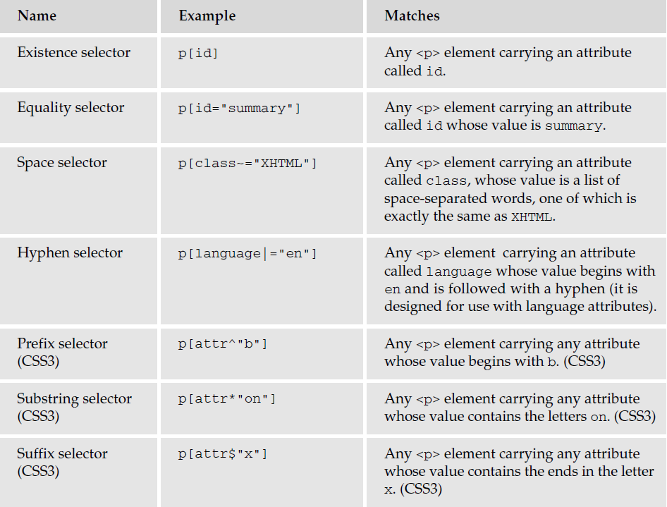
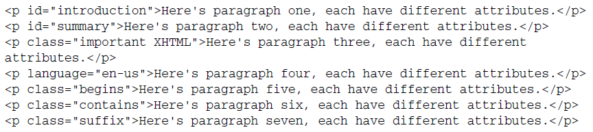
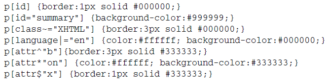

A child selector matches when an element is the child of some element. A child selector is made up of two or more selectors separated by ">".
The following rule sets the style of all P elements that are children of BODY:
{ line-height: 1.3 }
The following example combines descendant selectors and child selectors:
It matches a P element that is a descendant of an LI; the LI element must be the child of an OL element; the OL element must be a descendant of a DIV. Notice that the optional white space around the ">" combinator has been left out.
At times, authors may want selectors to match an element that is the descendant of another element in the document tree (e.g., "Match those EM elements that are contained by an H1 element"). Descendant selectors express such a relationship in a pattern. A descendant selector is made up of two or more selectors separated by white space. A descendant selector of the form "A B" matches when an element B is an arbitrary descendant of some ancestor element A.
For example, consider the following rules:
em { color: red }
Adjacent sibling selectors have the following syntax: E1 + E2, where E2 is the subject of the selector. The selector matches if E1 and E2 share the same parent in the document tree and E1 immediately precedes E2, ignoring non-element nodes (such as text nodes and comments).
Thus, the following rule states that when a P element immediately follows a MATH element, it should not be indented:
{ text-indent: 0 }
The next example reduces the vertical space separating an H1 and an H2 that immediately follows it:
{ margin-top: -5mm }
The following rule is similar to the one in the previous example, except that it adds a class selector. Thus, special formatting only occurs when H1 has class="opener":
{ margin-top: -5mm }
Attribute selectors enable you to use the attributes that an element carries in the selector. You can use
attribute selectors in several ways, as shown in the following table, but they have only been supported
in later browser versions.

Let us have a look at using these attribute selectors. Here are seven different paragraph elements, each
carrying different attributes/attribute values :

Now let us look at a CSS style sheet that uses attribute selectors to associate different style rules with each
of these elements:
